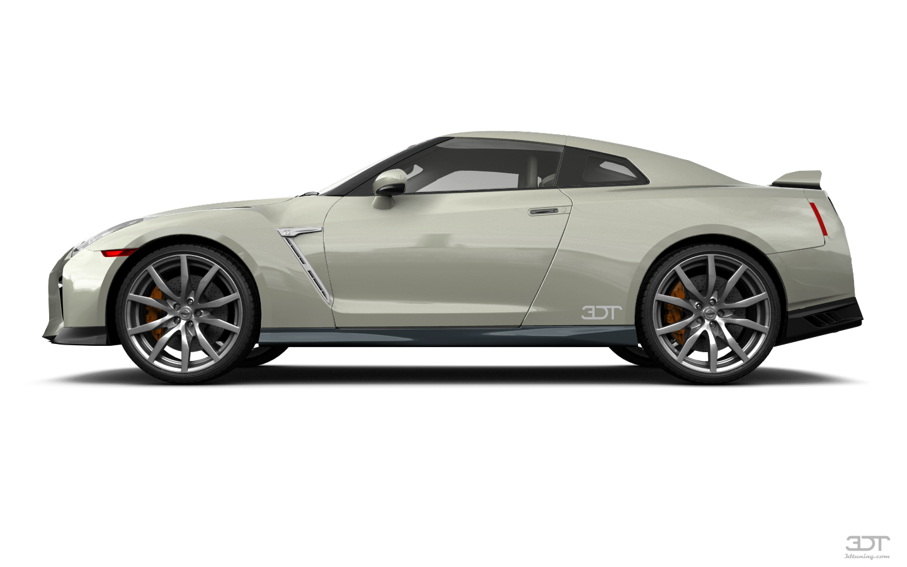
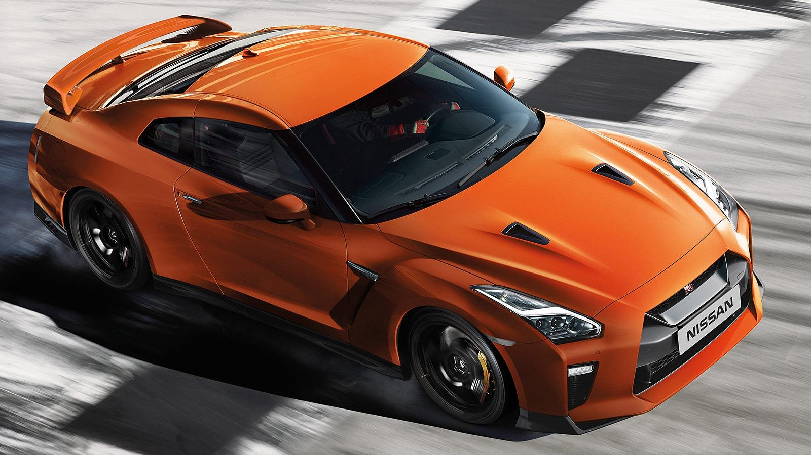
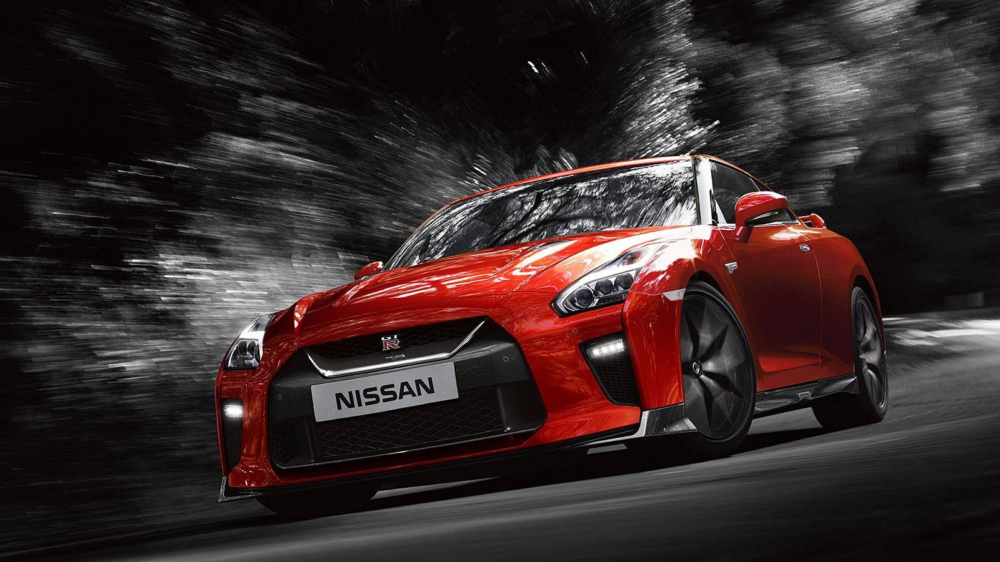

Это суперкар, от которого захватывает дух— даже когда он неподвижен. Передняя панель в салоне GT-R изготовлена с максимальным вниманием к деталям. Кожа Nappa тщательно отбирается вручную, что гарантирует ее ровный оттенок и полное отсутствие каких-либо изъянов. Такая кожа требует меньше мягкой подкладки, а значит, потрясающе выглядит и помогает снизить общий вес автомобиля. Настоящее произведение искусства.
Совершенная форма выверенная до миллиметра

Одержимость деталями — это когда тщательнейшему изучению подвергаются
мельчайшие элементы. Потеря энергии в 1%, вызванная аэродинамикой задней стойки крыши,
стала достаточным основанием для фанатично преданных своему делу инженеров GT-R, чтобы
заново спроектировать этот элемент. Теперь он безупречен.
На пике формы

Два сцепления... и никакой педали сцепления. Молниеносная скорость переключения

В GT-R сочетаются потрясающая устойчивость и плавность хода, присущие истинному спорткару
Технические характеристики
Мощность
Разгон до 100 км/ч
Крутящий момент
Тип КПП
Объем двигателя
Расход топлива
Покрышки и диски
570 л. с.
2.7 сек
637 Нм
Роботизированная
3.8 л
12.8 л/100 км
R20/R20